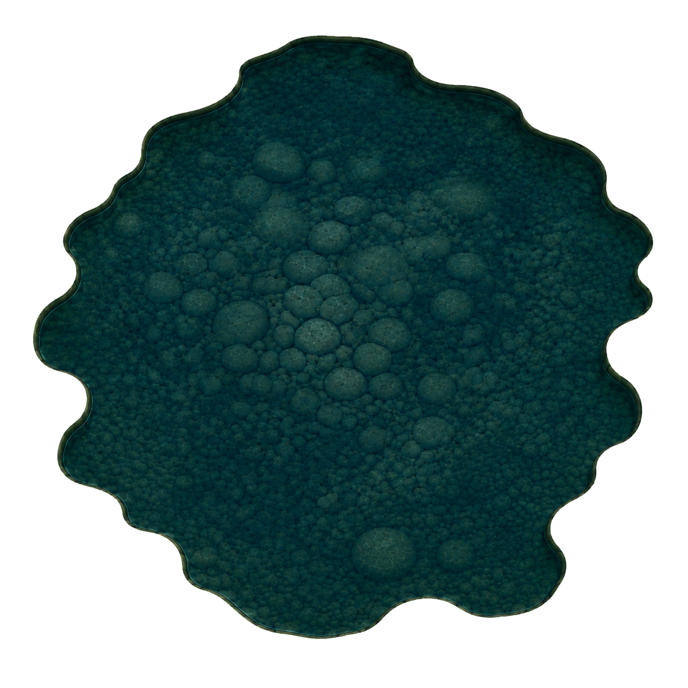
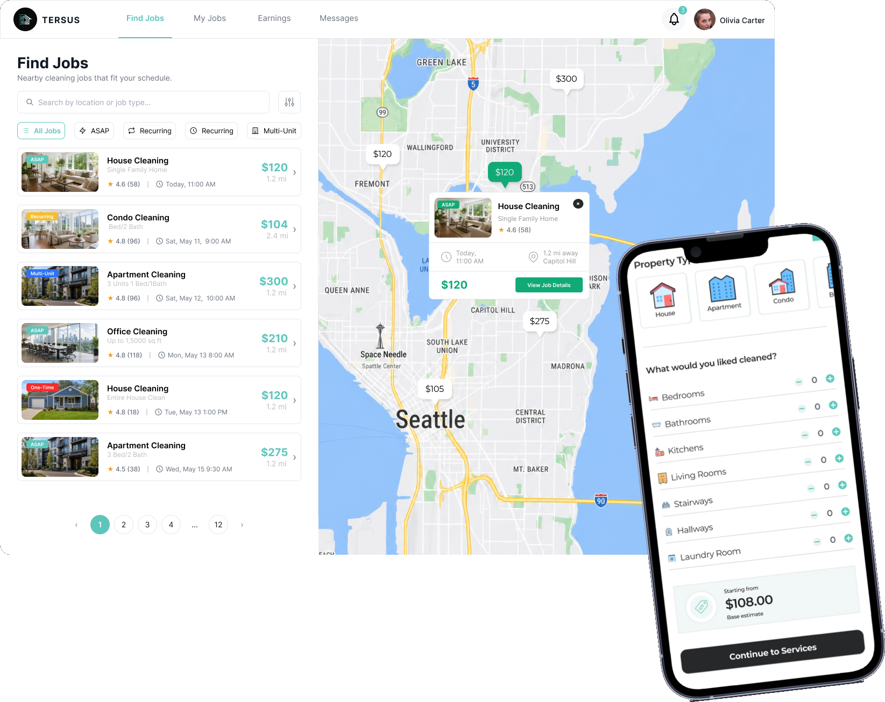
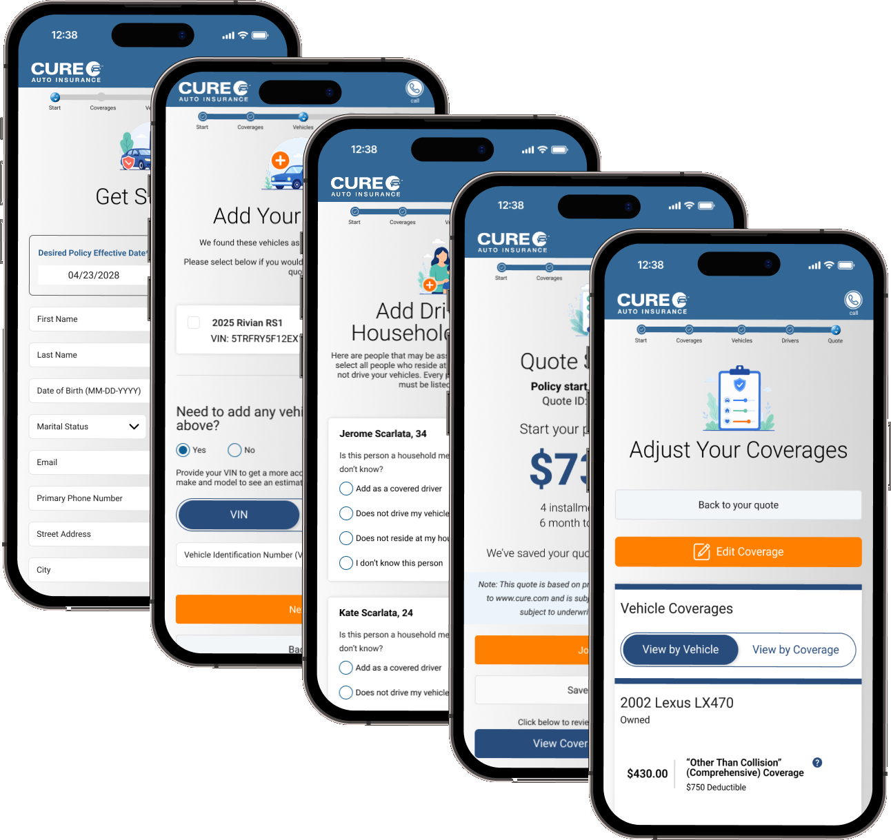
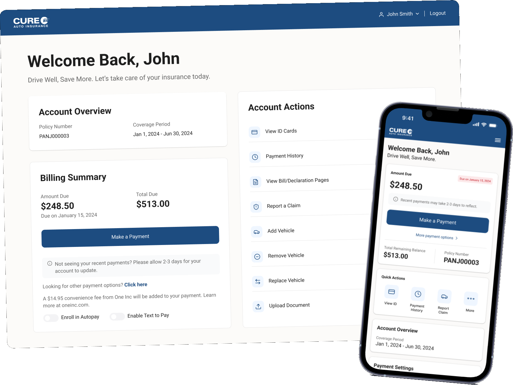

Andy Nguyen
Designing clarity through complexity.
UX/UI designer exploring the space between product design and engineering — shaping thoughtful digital experiences through systems, craft, and iteration.

Click to feed the koiSmall interactions matter.
Selected work below ↓
Recently Made.
04 CASE STUDIES-
01
Tersus
Simplified a two-sided home-cleaning marketplace across booking, onboarding, and cleaner job management.
- 30+
- Research participants
- 5
- Testing rounds

-
02
Quick Quote
Cut CURE's auto insurance quote flow from 20 screens to 10, making complex forms easier to complete.
- 20 → 10
- Screens
- 4
- Live prototype modules

-
Designed a mobile license-scanning flow that pre-filled quote details and reduced manual entry.
- 41%
- Drop-off reduced
- 4:55
- Avg. quote time
-
Rebuilt CURE's account portal across policy, billing, claims, and mobile self-service.
- 11
- Portal sections
- 2
- Designed breakpoints

More Projects.
GRAPHIC DESIGN · MOTION · ILLUSTRATION


· /contact
A final pause before we connect.
One moment, one meeting. Hold gently to pour.
Press and hold to pour the tea